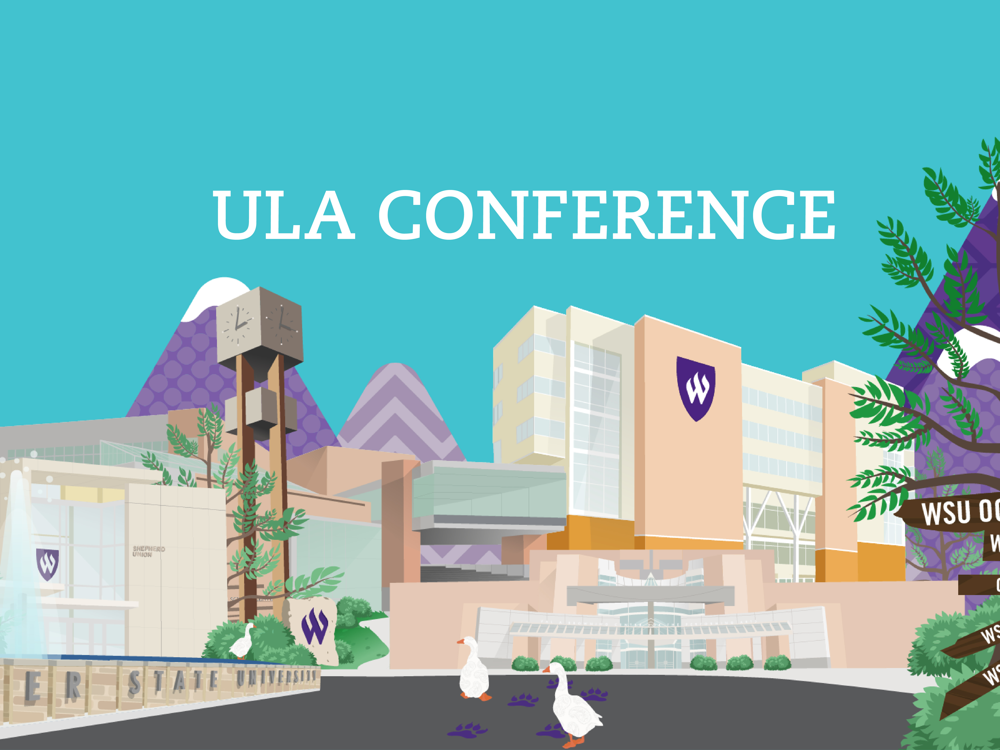
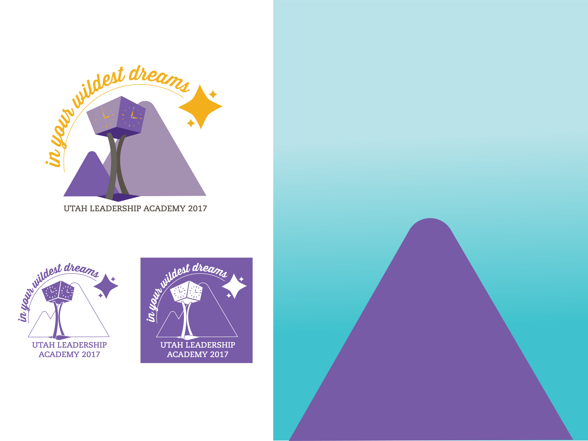
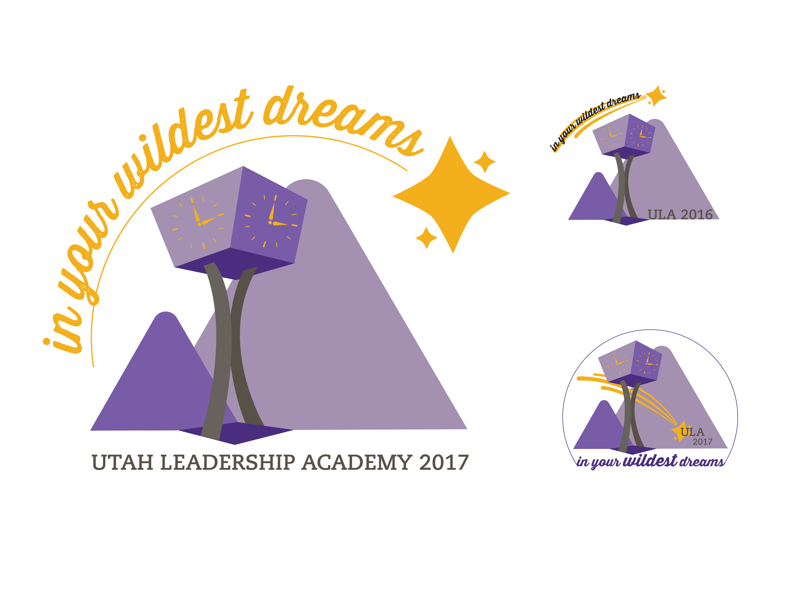
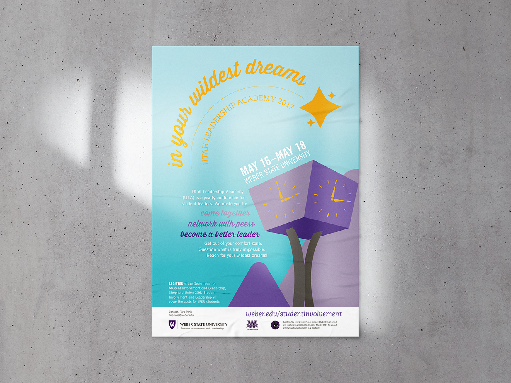
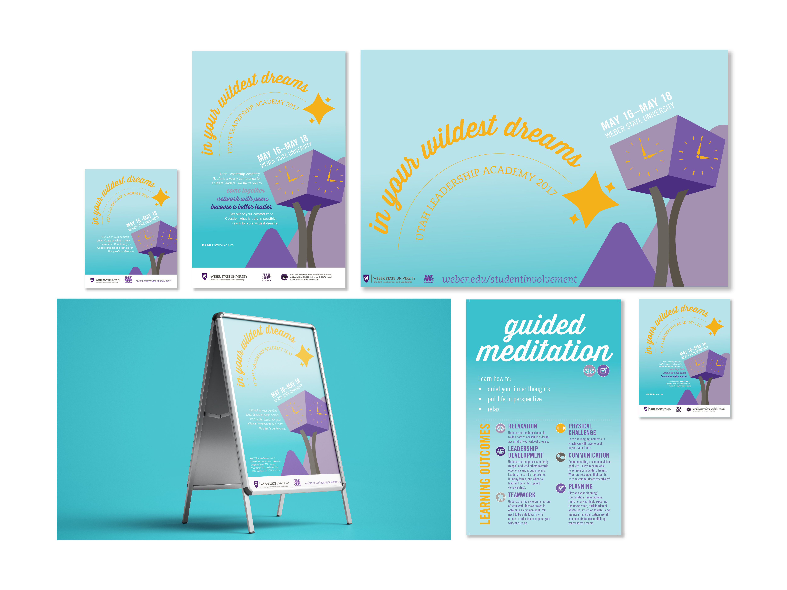
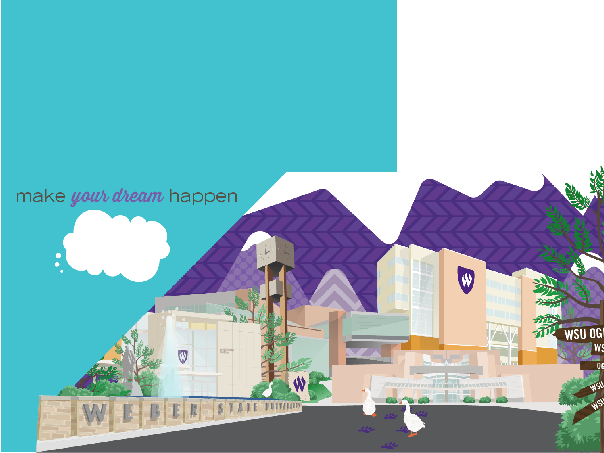
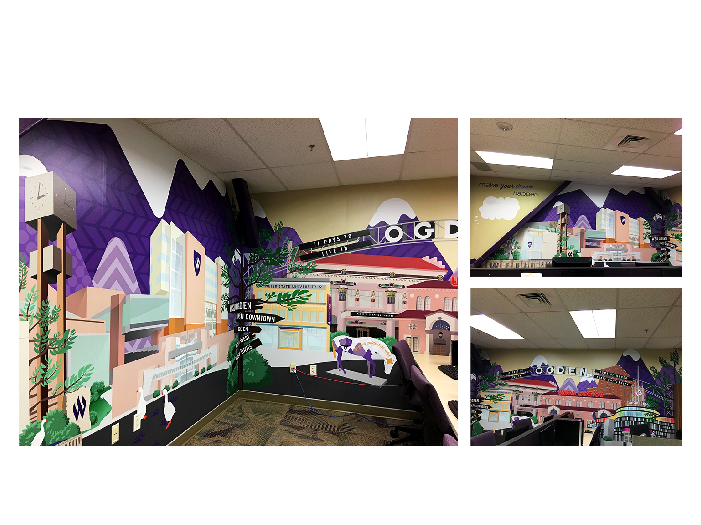
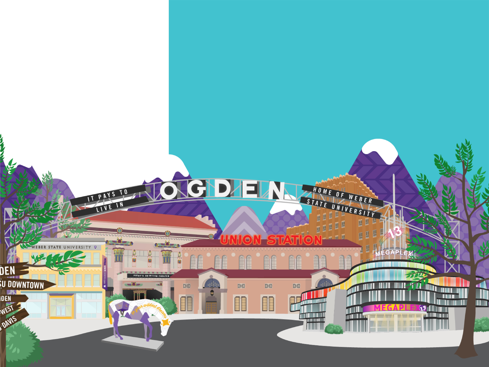
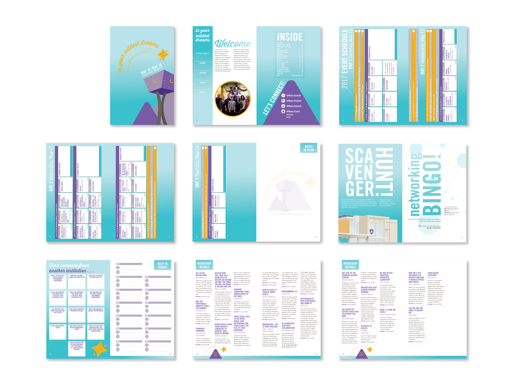
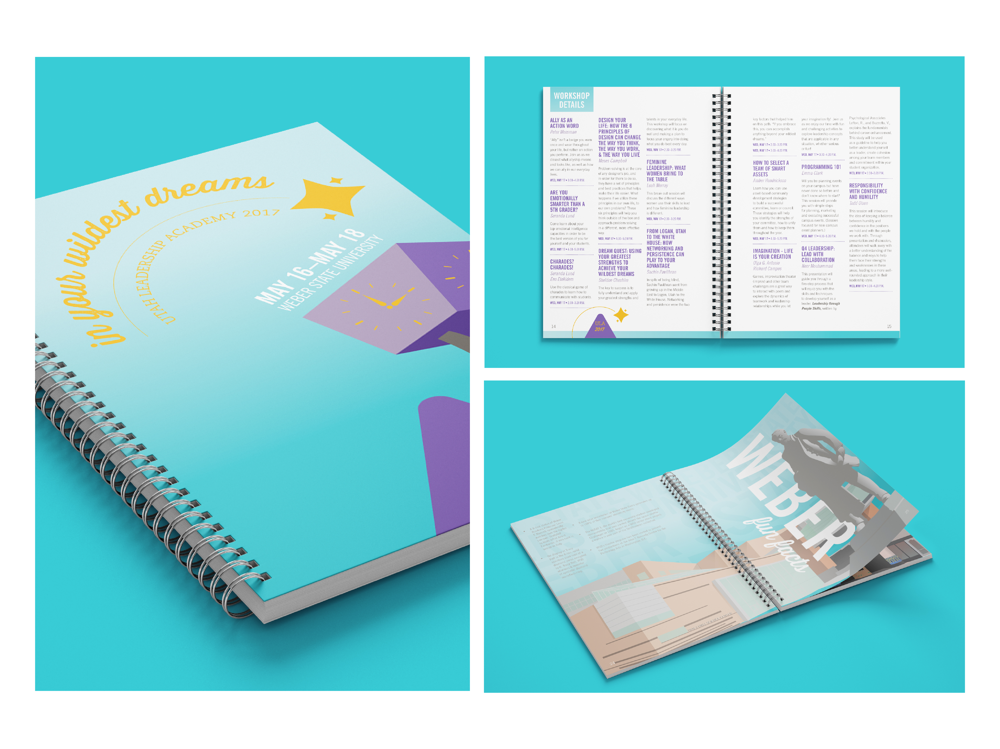
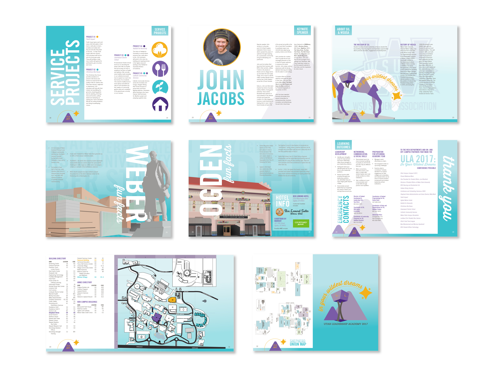
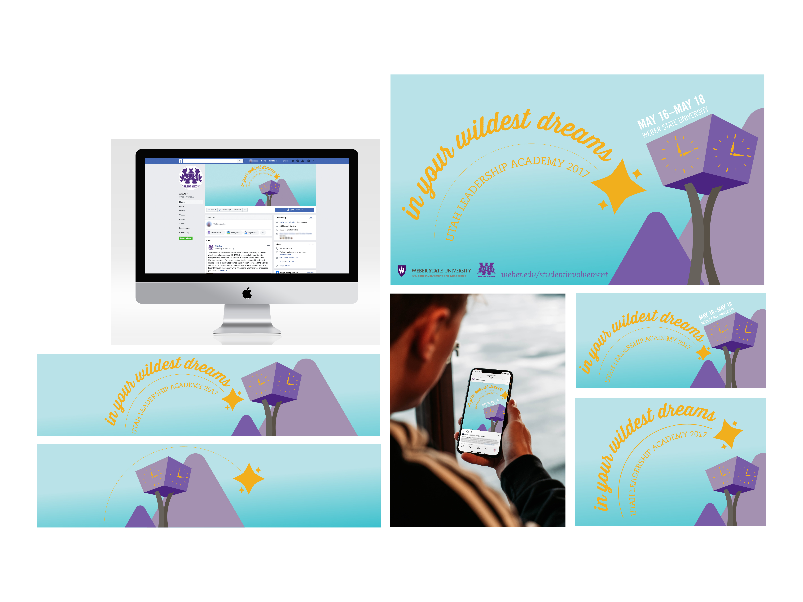
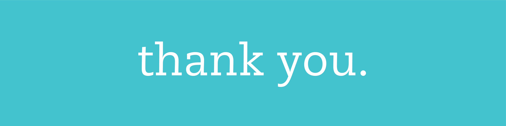
Campaign: ULA Conference
Utah Leadership Academy Conference is a statewide conference, hosted at the different universities locally. Weber State University hosted in 2017, and we wanted to stand out.
The campaign needed branding: starting with a logo/mark and building off of that while also fitting within WSU's brand. A big part of this campaign was creating a wall mural, that would be on display during the conference and for years after.
Solution
At the time, my team's social media manager was involved with ULA directly. As such, she had a bit of an "in" and knew what the committee was looking for in terms of a mark. They loved her sketch, but with no design background, she couldn't build it beyond that. I collaborated with her to create the logo in a format that we could put to use and lead the campaign with.
Result
A key piece of this project was the wall mural. The SIL team wanted something that made WSU stand out, and a corner wall mural with interactive whiteboard was the way to do that. It depicts Weber State meeting downtown Ogden, a lively and thriving area that our students enjoy when they need a change of scenery.